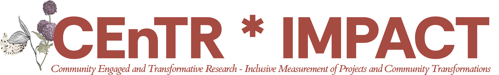

![]()

CEnTR-IMPACT Report for the Rising Waters, Resilient Communities Project
Snapshot 2025-04-30
Introduction
Rising Waters, Resilient Communities is an emerging participatory research initiative in its initial phase, bringing together Dr. Tanesha Duval’s methodological expertise from Palmetto Atlantic University with Dr. Mateo Nguyen’s conceptual leadership from Redwood State University and supporting contributions from Dr. Riley Harper of Evergreen Valley University. The interdisciplinary team is currently building relationships with coastal South Carolina communities to document traditional ecological knowledge about sea level rise while establishing protocols for collaborative data collection with local residents. Though still in early development, the project has successfully launched community planning workshops and recruited citizen scientists who are beginning to monitor coastal changes, laying groundwork for the co-design of climate adaptation strategies that honor both scientific evidence and community priorities. As the project unfolds with support from The Research Foundation, the research team is focused on creating sustainable engagement mechanisms that will eventually translate into actionable resilience planning for these vulnerable coastal communities.
Note
CEnTR*IMPACT provides quantitative metrics specifically designed to effectively communicate the value of community-engaged scholarship within academic evaluation systems. These metrics enable scholars to demonstrate impact to review committees, research teams, and funders through compelling data-driven narratives that complement qualitative approaches. CEnTR*IMPACT is grounded in the Community-Based Participatory Research (CBPR) methodology.
Direct Indicators
Direct Indicators are status counts of information including the number of partner institutions; the amount of time spent working together; the total number of attendees and participants at events and meetings; the total number of tools, documents, processes created to ensure fairness and accountability through the partnership; the total number of products—e.g., community-facing, scholar-facing—created; if engaged learning is a component of the project; and the number of agreed-to outcomes that have been met through the project.
Results

Analysis
Our Direct Indicators reflect the real-time contributions of our Rising Waters, Resilient Communities partnership. To date:
Partners engaged: We have active collaborations with three coastal town councils (Mount Pleasant, Folly Beach, and Isle of Palms), two community organizations (SC Coastal Coalition and the Gullah Cultural Heritage Foundation), and the Coastal Resilience Network.
Hours invested: Together, more than 200 volunteer hours have been logged by community citizen scientists alongside university researchers measuring shoreline changes and sharing local knowledge.
Events and workshops: Over 150 residents attended our planning workshops, where participants mapped historic flood zones and contributed traditional ecological insights.
Co-created resources: We’ve developed four community-facing tools—interactive flood maps, a mobile data log app, two workshop guides, and an oral-history recording protocol—and one scholarly article draft.
These counts capture our current scope: the breadth of our partnerships, the community’s invested time, and the co-designed outputs. While numbers alone don’t fully reflect the scope or depth of impact, they ground our shared journey and demonstrate the foundation we’re building together.
Notes & Next Steps
- Continue updating attendance logs and volunteer hours, ensuring every citizen scientist’s contribution is recognized.
- Refine workshop evaluation by collecting brief participant feedback at the end of each session–this will inform improvements to our guides.
- Translate the existing data log app interface into Spanish and Gullah phrases to increase accessibility for all community members.
- Track the number of flood markers deployed and oral-history interviews completed, linking these counts into our next snapshot to illustrate growth over time.
Project Dynamics
Project Dynamics information provides insight into where the project started, how the project is being carried out, and where the project ended up so far. Providing indicators across the domains of contexts, processes, research, and outcomes, Project Dynamics provides a map for facilitating a more successful and fair partnership.
Results

Analysis
The Project Dynamics scores (0.92 overall) underscore a balanced progression across five domains of Rising Waters, Resilient Communities. In particular:
- Contexts (0.88): We’ve grounded our work in the lived experiences of coastal families, integrating Gullah heritage insights alongside local sea-level data. This place-based approach has helped foster trust between researchers and residents, a vital step in building lasting relationships and ensuring that the work reflects shared priorities.
- Processes (0.94): Community advisory meetings and shared decision protocols have operated smoothly, reflecting strong co-governance.
- Research & Interventions (0.46): As expected in Phase I, structured data collection tools are still under refinement, pointing to opportunities for deeper collaborative design of sampling methods.
- Engaged Learning (0.58): Student interns from PAU and RSU co-facilitated workshops, fostering bidirectional learning—however, we can expand mentorship roles for local high school students.
- Outcomes (0.44): While we’ve produced early deliverables (maps and protocols), we are still translating community goals into measurable resilience actions.
This distribution highlights our strong foundation in setting and collaboration, while signaling that research design and tangible community-driven outcomes warrant attention as we move deeper into co-created climate adaptation planning.
Notes & Next Steps
- Host a research design co-lab where community members and university scientists draft next-phase survey questions and data-collection schedules together.
- Develop a mentorship program pairing local youth with our graduate interns to expand engaged learning and share scientific skills.
- Set clear community-defined outcome targets, such as the number of flood mitigation recommendations adopted by town councils, and build metrics to track them.
- Embed quarterly reflection sessions to revisit our decision-making processes, ensuring transparency and adjusting protocols based on community feedback.
Project Alignment
Project Alignment illuminates the degree to which community partners and university researchers are aligned on the following areas: Goals, Values, Roles, Resources, Activities, Empowerment, Outputs, and Outcomes. Project Alignment is determined through a common survey provided to researchers and community partners.
Results
The Alignment Score (\(S_a\)) is 0.50.

| Alignment | Researchers | Partners | Overall |
|---|---|---|---|
| Activities | 0.81 | 0.71 | 0.76 |
| Empowerment | 0.68 | 0.77 | 0.72 |
| Goals | 0.76 | 0.64 | 0.70 |
| Outcomes | 0.61 | 0.74 | 0.67 |
| Outputs | 0.90 | 0.57 | 0.72 |
| Resources | 0.82 | 0.49 | 0.63 |
| Roles | 0.90 | 0.57 | 0.72 |
| Values | 0.69 | 0.69 | 0.69 |
Analysis
Our Project Alignment score of 0.50 indicates fair agreement between community partners and researchers. Examining specific areas:
- High alignment on Values (0.69) shows we share a commitment to honoring traditional knowledge and scientific rigor.
- Strong researcher ratings on Resources (0.82) and Outputs (0.90) contrast with community ratings (0.49, 0.57), suggesting researchers feel well-equipped and prolific, while partners seek clearer communication around resource allocation and deliverable usefulness.
- Community-leading perceptions in Empowerment (0.77 vs. 0.68) and Outcomes (0.74 vs. 0.61) indicate that residents feel valued and hopeful about resilience gains, sometimes more so than researchers anticipate.
These differing views highlight our shared values but reveal operational gaps: partners want more involvement in deciding how resources are used and how outputs serve local needs.
Notes & Next Steps
- Convene a resource transparency workshop, where budgets, equipment inventories, and data-access plans are laid out for discussion.
- Co-create an outputs review working group—including elders, youth, and researchers—to assess draft materials (maps, apps) for cultural relevance and usability.
- Use participatory methods (e.g., dot-voting) to renegotiate roles and responsibilities in upcoming phases, making adjustments based on partner priorities.
- Schedule bi-monthly check-ins to track alignment progress, using a simple shared dashboard accessible online and at community centers.
Project Cascade Effects
Cascade Effects is a measure of the potential for community-engaged research impacts to spread to people based on the structure of an estimated model of the project’s social network across three degrees. The first degree (1°) is comprised of the project staff and community participants directly involved in the project, and the second (2°) and third (3°) degrees are spread outwardly from there.
Results

| Degree | People | Bridging | Channeling | Knitting | Reaching | Score |
|---|---|---|---|---|---|---|
| 1° | 10 | 0.70 | 0.68 | 0.70 | 0.69 | 0.69 |
| 2° | 29 | 0.57 | 0.57 | 0.63 | 0.61 | 0.60 |
| 3° | 45 | 0.32 | 0.33 | 0.29 | 0.30 | 0.31 |
Analysis
The Cascade Effects visualization reveals how our network’s influence spreads:
- 1st degree (Score 0.69): Core team members—citizen scientists, local leaders, and faculty—demonstrate strong bridging and channeling, ensuring direct communication.
- 2nd degree (Score 0.60): Friends and family of participants show moderate connection, but lower bridging (0.57) suggests we need new pathways to engage broader subgroups.
- 3rd degree (Score 0.31): Wider community networks are currently less knit; influential individuals in outlying groups (e.g., fishing cooperatives) lack strong ties into the project.
This drop-off signals that while our core engagement is robust, our messages and resources may not yet reach the full extent of these coastal communities.
Notes & Next Steps
- Identify and partner with local ambassadors, such as church leaders and cooperative chairs, to strengthen 2nd-degree bridging.
- Host a network weaving event, inviting extended contacts (neighbors, local business owners) to connect with our team and each other.
- Create spotlight stories–short profiles of 1st-degree participants shared via local radio and social media—to increase visibility and interest among the 3rd-degree audience.
- Track changes in network metrics after these actions to assess whether bridging, knitting, and reaching scores improve for 2nd and 3rd degrees.
Colophon
This report was prepared using the CENTR*SEEK Report Generation template v. 0.2.0, designed by Jeremy F. Price. The template is licensed under the Creative Commons Attribution-NonCommercial-ShareAlike 4.0 International License (CC BY-NC-SA 4.0). This license applies only to the template structure and formatting, not to the content of the report.
The software used to generate this report from data and analysis provided by the project team is licensed under the MIT License. For details, see https://github.com/CENTR-IMPACT/generate_report.
The CEnTR*IMPACT metrics, associated methodologies, and visualizations used in this report were developed by Jeremy F. Price. Please cite as: Price, JF. (2025). CEnTR*IMPACT Metrics for Community-Engaged Scholarship. [Publisher or repository, if available]

Reuse
CC BY-NC-SA
Citation
BibTeX citation:
@report{duval2025,
author = {Duval, Tanesha and Nguyen, Mateo and Harper, Riley},
title = {CEnTR-IMPACT {Report} for the {Rising} {Waters,} {Resilient}
{Communities} {Project}},
date = {2025-04-30},
url = {https://dcs.pau.edu/report},
langid = {en}
}
For attribution, please cite this work as:
Duval, Tanesha, Mateo Nguyen, and Riley Harper. 2025.
“CEnTR-IMPACT Report for the Rising Waters, Resilient Communities
Project.” https://dcs.pau.edu/report.